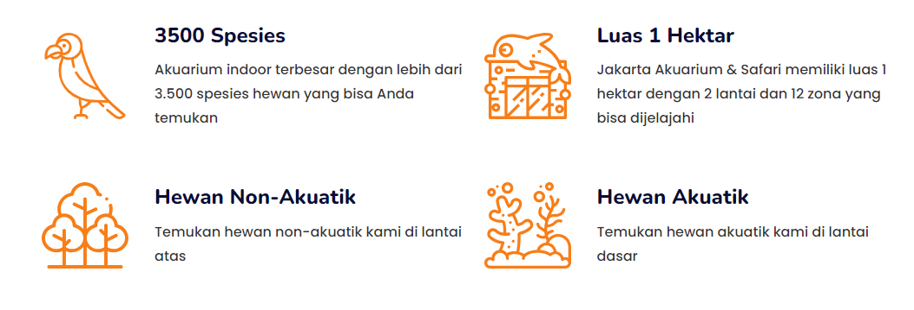

About us
Selamat datang di Jakarta Aquarium & Safari, Akuarium indoor terbesar di Indonesia, di bawah naungan Taman Safari Indonesia bekerja sama dengan Aquaria KLCC, Malaysia. Di sekitar kawasan konservasi seluas satu hektar ini, Anda bisa melihat lebih dari 3.500 spesies hewan akuatik dan non-akuatik. Berinteraksi langsung dengan hewan-hewan di sini dengan menyentuh dan memberi mereka makan. Dipandu oleh penjaga hewan berpengalaman, Anda akan mendapatkan informasi menarik tentang hewan-hewan di sini. Cari tahu keunikan Kerapu Raksasa, Penguin Humboldt, Naga Laut, dan masih banyak lagi. Temukan kisah menarik dan pengalaman yang tak terlupakan di Jakarta Akuarium & Safari!

Informasi Tiket
Informasi Tiket |
Dewasa |
Anak-anak |
|---|---|---|
Weekday Regular
|
IDR 142.500 | IDR 109.250 |
Weekday Premium
|
IDR 190.000 | IDR 142.500 |
Weekend Regular
|
IDR 166.250 | IDR 142.500 |
Weekend Premium
|
IDR 213.750 | IDR 166.250 |
*Note :
- Dewasa Berlaku untuk semua orang dengan tinggi badan di atas 120 cm
- Anak-anak Berlaku untuk anak di atas 2 tahun dengan tinggi badan maksimal 120 cm
Location
Penghargaan
Jakarta Akuarium & Safari dengan bangga menerima penghargaan:
- Trip Advisor's Certificate Excellence Destination 2018
- Tripadvisor Traveler's Choice 2020
- Indonesia Travel Tourism Awards (ITTA) as Indonesian Leading Conservation Destination 2018-2019 / 2019-2020.
Fasilitas & Wahana
Selain memiliki wahana yang seru, Kamu juga bisa menikmati fasilitas tambahan untuk mendukung wisata Kamu selama di Aquarium Jakarta satu ini. Berikut adalah fasilitas yang bisa Kamu temukan:
- Toilet
- Ruang Laktasi
- Kursi Roda
- Kereta Dorong
- Loker
- Wi-fi
- Toko Souvenir
Berikut adalah wahana Jakarta Aquarium yang bisa Kamu temukan:
- Toilet
- Touch Pool
- Koleksi Biota Laut
- Atraksi Satwa Laut
- Diving with The Shark
- Pearl of The South Sea
- Aquatrekking
- Pingoo
- Aqua Camp